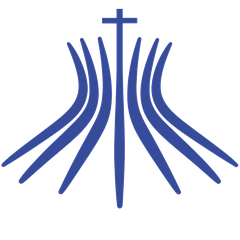
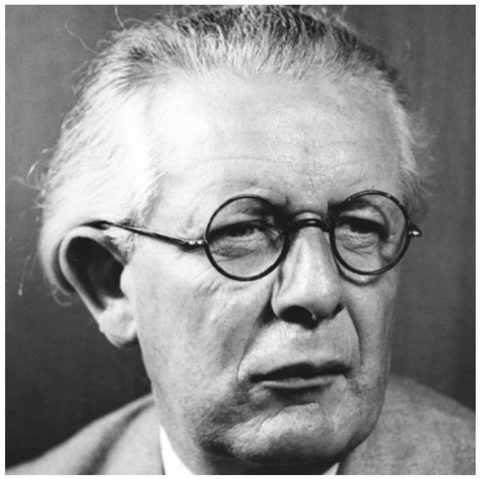
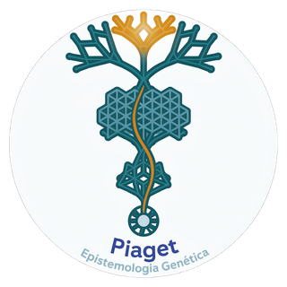
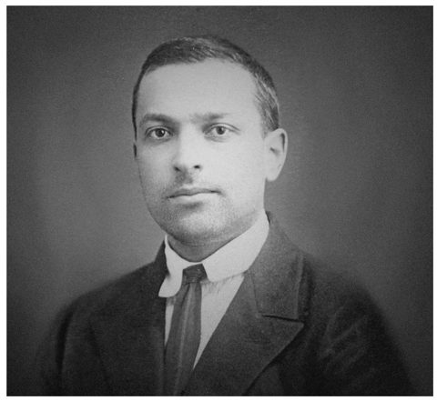
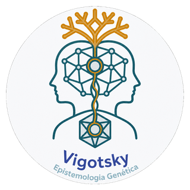
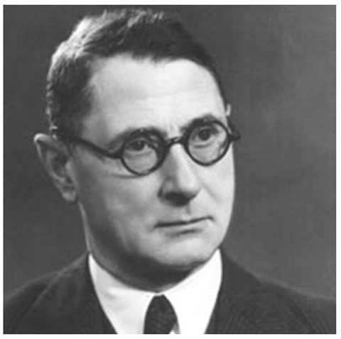
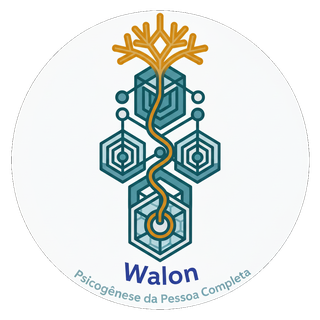
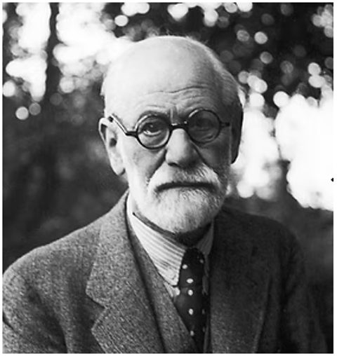
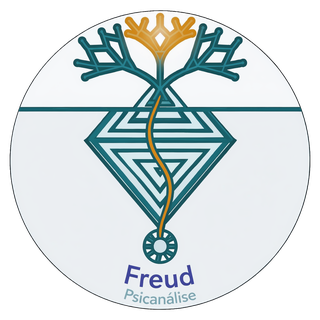

UNIVERSIDADE CATÓLICA DE BRASÍLIA FACULDADE DE PSICOLOGIA Weney Lima de AraújoPiaget, Vigotski, Wallon e Freud construíram, em contextos e tradições diferentes, formas próprias de organizar o crescimento psicológico em etapas. Todos eles viveram e desenvolveram suas teorias centrais durante as primeiras décadas do século XX, partilhando o mesmo período histórico, embora fossem de gerações diferentes e tivessem origens e tempos de vida distintos. Clique no nome do autor para conhecer sua trajetória e sua teoria.

Biólogo de formação, Piaget se interessou cedo pela forma como o conhecimento se constrói. Trabalhando no laboratório de Alfred Binet em Paris, aplicando testes de inteligência em crianças, percebeu algo mais interessante do que acertos e erros: os erros das crianças seguiam uma lógica própria, diferente da dos adultos. Essa observação o levou a fundar, em Genebra, o Centro Internacional de Epistemologia Genética, onde passou décadas investigando como a criança constrói noções de espaço, tempo, número e causalidade.
Piaget chamou sua teoria de epistemologia genética porque seu objetivo não era descrever a infância por si só, mas entender como o próprio conhecimento humano se origina e evolui — a palavra "genética" aqui remete a gênese, origem, não à biologia hereditária.

Para Piaget, o sujeito não recebe o conhecimento pronto do ambiente, nem ele já nasce programado no organismo: o conhecimento é construído na interação entre sujeito e objeto, por meio da ação. A criança age sobre o mundo, e essa ação vai formando esquemas mentais cada vez mais complexos.
Dois processos sustentam essa construção. Na assimilação, a criança interpreta uma novidade usando os esquemas que já possui. Na acomodação, quando a novidade não cabe nos esquemas existentes, é o próprio esquema que se transforma para dar conta dela. O equilíbrio entre os dois — a equilibração — é o motor que empurra o pensamento de um estágio para o seguinte: cada novo estágio representa uma estrutura lógica mais estável e mais ampla do que a anterior.
A inteligência ainda não é feita de ideias, mas de ações: a criança "pensa" com as mãos, a boca e os olhos, coordenando percepções e movimentos. No início, seus esquemas são reflexos simples — sugar, agarrar — que aos poucos se combinam em ações intencionais, como puxar um pano para alcançar um brinquedo escondido embaixo dele.
A conquista central deste período é a noção de permanência do objeto: por volta dos 8 a 12 meses, a criança passa a entender que um objeto continua existindo mesmo quando sai do campo de visão, e passa a procurá-lo ativamente. Antes disso, para o bebê, o que some deixa de existir. O estágio termina com o início da capacidade de representar mentalmente objetos e ações ausentes, abrindo caminho para a linguagem e o jogo simbólico.
Com o surgimento da função simbólica, a criança passa a representar o mundo por meio de símbolos: a linguagem se expande rapidamente, aparece o jogo de faz de conta (um cabo de vassoura vira cavalo) e o desenho começa a representar objetos reais.
Apesar desse avanço, o pensamento ainda tem limitações importantes. O egocentrismo intelectual faz a criança supor que os outros veem o mundo exatamente como ela vê. A centração a leva a fixar-se em um único aspecto perceptivo de uma situação — por isso, ao ver água mudar de um copo baixo e largo para um copo alto e fino, ela costuma dizer que "agora tem mais água", guiando-se pela altura e ignorando a largura. Falta ainda a reversibilidade: a capacidade de mentalmente desfazer uma transformação e voltar ao estado inicial.
A criança conquista a reversibilidade do pensamento e passa a realizar verdadeiras operações lógicas, isto é, ações mentais que podem ser desfeitas. Surge a conservação: ela entende que a quantidade de líquido, massa ou número permanece a mesma apesar de mudanças na forma ou na disposição dos objetos.
Aparecem também a classificação (agrupar objetos por critérios, e até por critérios hierárquicos, como "cães" dentro de "animais") e a seriação (ordenar elementos segundo uma dimensão, como do mais curto ao mais longo). A limitação do período está no nome: essas operações só funcionam quando apoiadas em objetos concretos ou situações imagináveis; problemas puramente abstratos ainda escapam à criança.
O pensamento se liberta do concreto e passa a operar sobre possibilidades, hipóteses e proposições abstratas — é o raciocínio hipotético-dedutivo. O adolescente consegue formular "e se...", testar sistematicamente variáveis (por exemplo, isolando uma de cada vez para descobrir o que influencia o balanço de um pêndulo) e raciocinar sobre enunciados sem referência a objetos reais, como em problemas de lógica formal ou álgebra.
Essa nova capacidade também alimenta o pensamento sobre valores, ideologias, o futuro e a própria identidade — não por acaso, é também o período em que Piaget situa o amadurecimento do raciocínio moral mais autônomo.

Formado em Direito e Letras, Vigotski chegou à psicologia já adulto, atraído pelo projeto de construir uma ciência psicológica de base marxista na União Soviética pós-revolucionária. Trabalhou intensamente por pouco mais de dez anos — morreu de tuberculose aos 37 anos — mas deixou, com colaboradores como Alexander Luria e Alexei Leontiev, as bases da chamada psicologia histórico-cultural, hoje uma das correntes mais influentes sobre desenvolvimento e aprendizagem.
A expressão psicologia histórico-cultural resume a ideia central de Vigotski: as funções psicológicas superiores — atenção voluntária, memória lógica, linguagem, pensamento conceitual — não são dadas pela natureza biológica do indivíduo isoladamente. Elas nascem primeiro nas relações sociais e na cultura (a "história" de um povo, suas ferramentas e signos) e só depois são internalizadas pelo indivíduo.

Vigotski propõe que todo processo psicológico superior aparece duas vezes no desenvolvimento: primeiro entre pessoas (no plano interpsicológico, por exemplo quando um adulto aponta e nomeia algo para a criança), e só depois dentro da própria pessoa (no plano intrapsicológico, quando a criança passa a apontar e nomear para si mesma, internamente). A linguagem tem papel central nesse processo, pois é o principal instrumento de mediação entre a cultura e o pensamento individual.
Um conceito-chave é a zona de desenvolvimento proximal: a distância entre o que a criança já consegue fazer sozinha e o que ela consegue fazer com a ajuda de alguém mais experiente. É justamente nessa zona que o ensino e a interação social produzem desenvolvimento — aprender não é apenas acompanhar a maturação biológica, mas puxá-la para frente.
Por isso, ao contrário de Piaget, Vigotski não descreve estágios definidos por estruturas lógicas universais, e sim períodos de desenvolvimento organizados em torno da atividade e da relação social predominante em cada fase, pontuados por crises de transição em que a criança rompe com a forma antiga de se relacionar com os adultos.
O bebê é radicalmente dependente do adulto para sobreviver, mas essa dependência é also o berço do psiquismo: é por meio da comunicação emocional direta — trocas de olhar, sorriso, colo, tom de voz — que se organizam as primeiras formas de atenção e percepção compartilhadas.
Ao final do período, ocorre a chamada crise do primeiro ano: com a aquisição da marcha e das primeiras palavras, a criança ganha autonomia para se afastar fisicamente do adulto e para nomear o que quer, o que reorganiza toda a relação entre os dois.
A atividade que organiza o desenvolvimento passa a ser a ação objetal-manipulatória: a criança explora o uso social dos objetos ao seu redor (para que serve uma colher, um sapato) em geral na presença e com a mediação de um adulto que demonstra e nomeia.
O período termina na conhecida crise dos três anos, marcada por oposição, teimosia e a afirmação de vontade própria ("eu que faço"), quando a criança começa a se perceber como alguém separado do adulto, com desejos próprios que podem entrar em conflito com os dele.
A atividade principal é o jogo de papéis sociais (o brincar de "casinha", de "médico", de "escolinha"). Para Vigotski, esse jogo não é mero entretenimento: nele, a criança age sobre o significado social das coisas antes de conseguir realizar essas ações de verdade, criando uma espécie de zona de desenvolvimento proximal para si mesma, ao obedecer voluntariamente às regras implícitas do papel que assumiu.
É também neste período que a linguagem se consolida como instrumento de planejamento da própria ação, e não apenas de comunicação com o outro.
Com a entrada na escola, a atividade de estudo torna-se central e passa a exigir da criança atenção voluntária, memória deliberada e pensamento organizado por conceitos, e não apenas por experiências imediatas.
Vigotski distingue os conceitos espontâneos, formados na experiência cotidiana (a criança sabe usar a palavra "irmão" sem saber defini-la com precisão), dos conceitos científicos, ensinados sistematicamente na escola, organizados em relações lógicas entre si. O encontro entre esses dois tipos de conceito é, para ele, um dos motores mais potentes do desenvolvimento intelectual nesta fase.
A relação com os pares ganha peso central, e a atividade predominante passa a ser a comunicação íntima e pessoal entre adolescentes, muitas vezes mais valorizada do que a relação com os adultos.
No plano cognitivo, consolida-se o pensamento por conceitos verdadeiros, capaz de generalizar e abstrair de forma consciente e deliberada. Vigotski associa este período também à formação de uma autoconsciência mais elaborada, em que o próprio adolescente se torna objeto de sua reflexão.

Médico, filósofo e psicólogo, Wallon também foi político atuante e ajudou a redigir, após a Segunda Guerra, um influente plano de reforma da educação francesa. Sua formação múltipla explica o caráter integrador de sua teoria: ele recusava explicações que isolassem a inteligência da afetividade, ou a mente do corpo, insistindo em estudar a criança como uma totalidade situada em um meio concreto.
Wallon chamou seu projeto de estudo da psicogênese da pessoa completa porque recusava recortar o desenvolvimento em "aspectos" separados — cognitivo de um lado, afetivo de outro, motor de outro. Para ele, esses campos estão sempre entrelaçados, e o que se desenvolve, ao final, é uma pessoa inteira.

Wallon organiza o desenvolvimento em torno de quatro conjuntos funcionais que interagem constantemente: a afetividade (emoções e sentimentos), o ato motor (movimento e postura), o conhecimento (inteligência e cognição) e a formação do eu como pessoa (identidade). Nenhum desses conjuntos evolui isoladamente; o avanço em um reorganiza os demais.
Um traço original de sua teoria é a ideia de que o desenvolvimento avança em alternância de predominância: em certos estágios a criança está voltada "para dentro", concentrada na construção de si mesma e nas relações afetivas mais próximas; em outros, está voltada "para fora", concentrada em explorar e categorizar o mundo físico e social. Cada mudança de estágio costuma vir acompanhada de uma crise, já que exige reorganizar tudo o que foi construído até ali sob um novo eixo predominante.
Sem recursos motores coordenados nem linguagem, o bebê se comunica essencialmente por meio de reações emocionais — choro, sorriso, tensão corporal — às quais o adulto responde interpretando-as. Wallon dá grande importância a esse "diálogo tônico-emocional": é através dele que a criança primeiro se liga aos outros e regula, ainda que precariamente, seu próprio estado interno.
A predominância aqui é claramente afetiva e voltada para dentro: a emoção organiza a vida psíquica antes que qualquer outra função esteja disponível.
Com o desenvolvimento da marcha, da preensão e da linguagem inicial, a atenção da criança se volta para fora, para a exploração ativa do ambiente físico. É um período de intensa curiosidade motora: manipular, deslocar-se, experimentar objetos.
Wallon chama este estágio de "projetivo" porque, para pensar, a criança ainda precisa "projetar" o pensamento em atos e gestos concretos — o pensamento se apoia diretamente na ação sobre o mundo, ainda não existe de forma independente dela.
A atenção volta-se novamente para dentro, agora com o objetivo de construir e afirmar a própria identidade. Wallon descreve três momentos dentro deste estágio: primeiro uma fase de oposição, em que a criança contraria o adulto sistematicamente para se afirmar como alguém distinto ("não!"); depois uma fase de sedução, em que busca ativamente a admiração e a atenção do outro; e por fim uma fase de imitação, em que se apropria de modelos de identidade observados nos adultos.
Todo esse trabalho, aparentemente contraditório, cumpre uma única função: consolidar a consciência de si como pessoa distinta e valorizada.
Resolvida (ao menos provisoriamente) a questão da identidade, o interesse volta-se de novo para fora: para o conhecimento e a categorização sistemática do mundo. Amadurecem a atenção voluntária, a memória e a capacidade de diferenciar e classificar objetos e ideias — daí o nome "categorial".
É também o período de entrada na escola formal e de ampliação importante das relações sociais para além da família, o que fornece novo material para essa atividade classificatória.
As transformações corporais da puberdade reativam abruptamente a atenção sobre si mesmo, revivendo, em outro patamar, as questões de identidade do personalismo. O corpo que muda, o desejo que desperta e as novas expectativas sociais exigem uma reorganização geral entre afetividade, razão e imagem de si.
Wallon via essa fase como especialmente instável justamente por reunir, de forma condensada, tensões que nos estágios anteriores estiveram mais distribuídas no tempo.

Médico neurologista formado em Viena, Freud desenvolveu a psicanálise a partir do tratamento de pacientes com sintomas que a medicina de sua época não conseguia explicar organicamente. Ao investigar essas histórias por meio da associação livre e da interpretação de sonhos, chegou à hipótese de um inconsciente estruturado por desejos e conflitos que remontam à primeira infância — o que o levou a propor uma teoria do desenvolvimento centrada na sexualidade infantil, um dos aspectos mais controversos e originais de sua obra.
A expressão desenvolvimento psicossexual não se refere à sexualidade adulta, mas a algo mais amplo: para Freud, desde o nascimento existe uma energia pulsional (a libido) em busca de satisfação, e essa energia se concentra, em cada momento da infância, em uma zona diferente do corpo — chamada de zona erógena.

Cada fase psicossexual é nomeada pela zona do corpo que, naquele momento, é fonte privilegiada de prazer e também de possíveis conflitos entre o desejo da criança e as exigências do mundo externo (os pais, as normas, o próprio corpo). A forma como cada um desses conflitos é vivido e resolvido deixa marcas na personalidade adulta: uma fixação — uma satisfação incompleta ou um excesso de gratificação em determinada fase — pode continuar influenciando desejos, ansiedades e traços de caráter muito depois de a fase ter passado.
Diferente de Piaget, Vigotski e Wallon, cujo foco é a inteligência, a cultura ou a pessoa como um todo, Freud está preocupado especificamente com a vida pulsional e inconsciente: como o desejo se organiza, se recalca e retorna, e como a criança negocia, internamente, a passagem de uma satisfação mais imediata e corporal para formas socialmente aceitas de amor, trabalho e relação com o outro.
A boca é a zona erógena central: sugar, morder e levar objetos à boca são, ao mesmo tempo, atividades de sobrevivência (alimentação) e de prazer. É pela boca que o bebê tem seu primeiro contato organizado com o mundo e com a figura materna.
Freud descreve dois momentos dentro da fase: um mais passivo, ligado à sucção e à incorporação, e outro, já com o surgimento dos dentes, mais agressivo, ligado à mordida — o primeiro esboço da agressividade dirigida ao objeto de desejo.
Com a maturação do controle esfincteriano, o prazer se desloca para a região anal, e o controle sobre reter ou expelir as fezes se torna uma das primeiras experiências de domínio voluntário sobre o próprio corpo.
É também o cenário do primeiro grande confronto entre o desejo da criança e uma exigência social explícita: o desfralde. Como esse conflito é vivido — com rigidez excessiva ou com jogo de poder entre pais e filho — influencia, segundo Freud, traços futuros ligados a ordem, controle e teimosia.
O interesse da criança se volta para os próprios genitais e para as diferenças entre meninos e meninas. É neste período que Freud situa o complexo de Édipo: um intenso investimento afetivo da criança pelo genitor do sexo oposto, acompanhado de rivalidade e ambivalência em relação ao genitor do mesmo sexo.
A resolução desse conflito — abandonando o desejo pelo genitor e passando a identificar-se com ele — é, para Freud, decisiva na formação do superego, a instância psíquica ligada à moral, às regras e ao senso de culpa.
Após a turbulência da fase fálica, a energia pulsional entra em um período de relativa calmaria: os impulsos sexuais são, em boa parte, recalcados ou canalizados (sublimados) para atividades socialmente valorizadas, como os estudos, os esportes e as amizades.
Não é, portanto, uma fase sem desenvolvimento, mas uma fase em que o desenvolvimento psicossexual dá lugar, em primeiro plano, ao desenvolvimento social e intelectual da criança.
Com as mudanças hormonais e corporais da puberdade, a libido volta a se concentrar nos órgãos genitais, mas agora orientada para relações fora do círculo familiar — a grande tarefa desta fase é deslocar o desejo dos pais (objetos da fase fálica) para parceiros externos.
Para Freud, alcançar essa fase de forma relativamente bem resolvida é o que permite, na vida adulta, articular prazer sexual, afeto e capacidade de trabalho de maneira integrada — o que ele resumia, informalmente, como a capacidade de "amar e trabalhar".